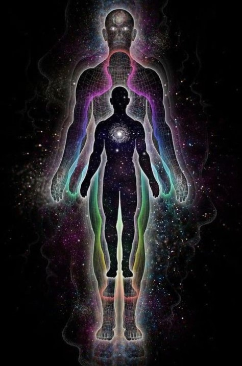

Últimamente, es muy común escuchar la frase “vibrá alto” pero, ¿te preguntaste alguna vez qué quiere decir esto? Desde la perspectiva científica, todo en el universo está en constante movimiento y emite energía en forma de ondas y frecuencias. Los seres humanos no son la excepción. Nuestros cuerpos, emociones y pensamientos generan una energía que tiene su propia frecuencia o vibración.
Podemos vibrar tanto en frecuencias altas como bajas, y cada aspecto de nuestra vida está influenciado por esto. Por ejemplo, cuando no enfermamos nuestro tono está cerca de los 5.5 Hz.
También el miedo, la ira, ciertos lugares o noticias negativas pueden llevarnos a frecuencias bajas, provocandonos irritación, temor y agotamiento.
La buena noticia es que tenemos el poder de elevar nuestras vibraciones para sentirnos mejor.
La gratitud, la simpatía y el amor universal son algunas de las emociones que pueden alcanzar incluso los 150 Hz o más. Cada emoción y estado mental tienen su propia vibración, lo que influye en nuestra percepción del mundo y cómo interactuamos con él.
Como si estuviesemos viendo el paisaje desde un edificio de muchos pisos, cuanto más alto estás, la visión es más amplia y mejor.
Si elevamos nuestra vibración no solo vamos a sentirnos mejor, más sanos y equilibrados, sino que además, allí está la clave para alcanzar un mayor estado de conciencia y conexión con el universo. Entonces, ¿cómo podemos elevar nuestra vibración? La respuesta puede variar para cada individuo, El secreto está en disfrutar de la vida, cultivando emociones positivas, intenciones y pensamientos luminosos. Algunas herramientas útiles son la meditación, practicar la gratitud, estar en la naturaleza, cuidar de nuestro cuerpo, y rodearnos de personas y entornos que nos inspiran y nos hacen sentir bien.
Recordemos que somos seres complejos y multidimensionales, y que nuestra vibración puede cambiar según nuestras experiencias y elecciones. Al ser conscientes de nuestra energía interior y trabajar en elevar nuestra vibración, podemos abrirnos a nuevas perspectivas, oportunidades y una mayor conexión con nosotros mismos y el mundo que nos rodea. ¡Así que, adelante, descubre la magia de tu propia vibración y cómo puedes transformar tu vida a través de ella!